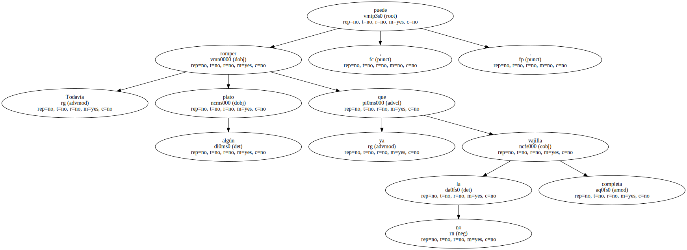
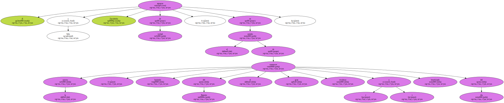
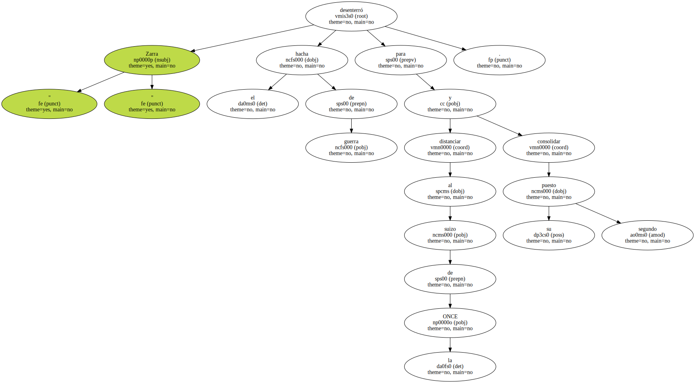
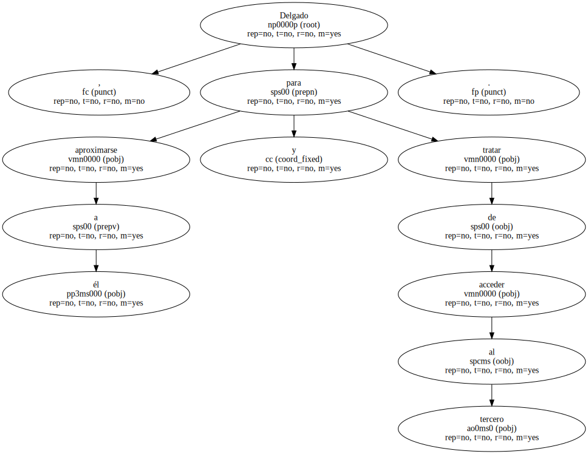
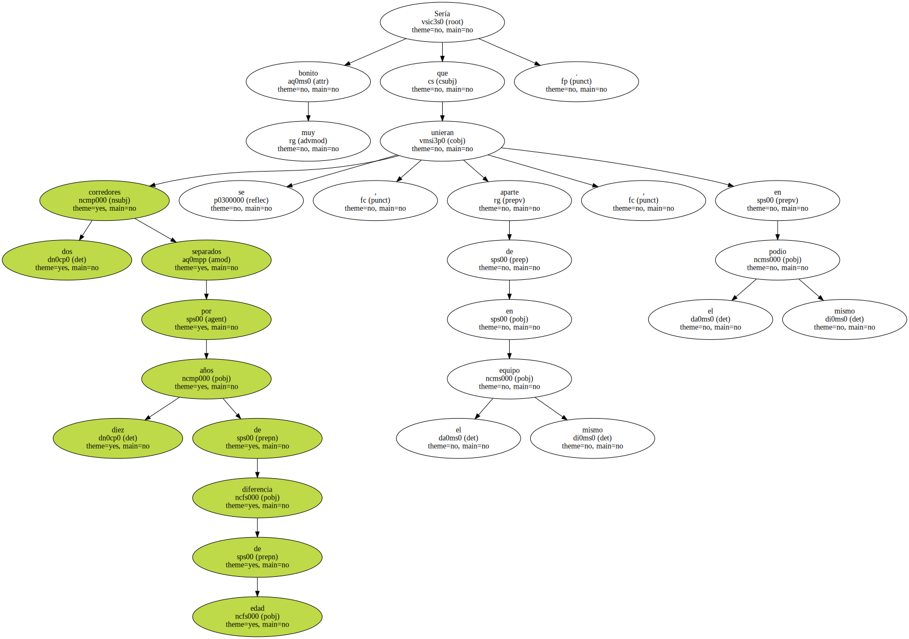
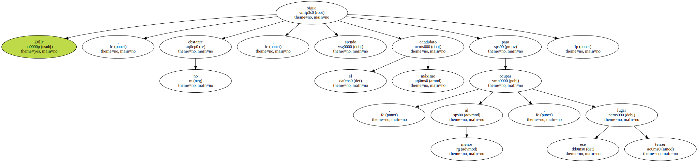
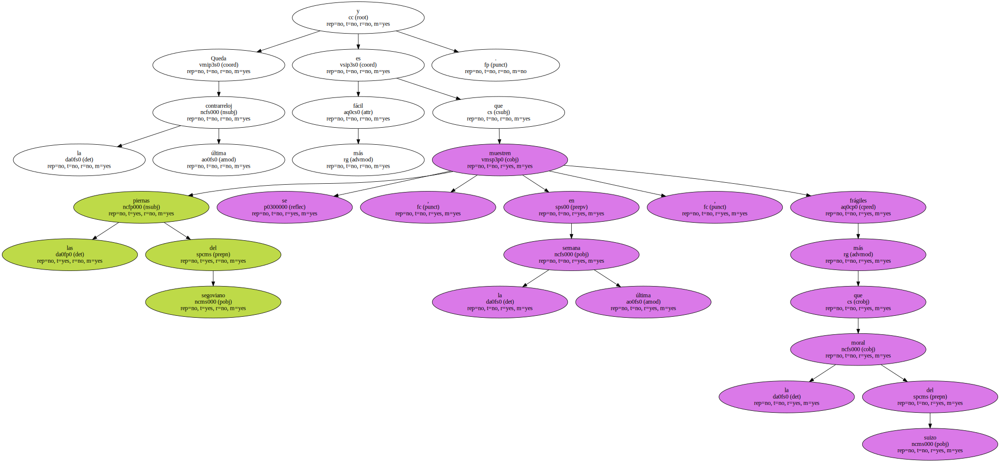
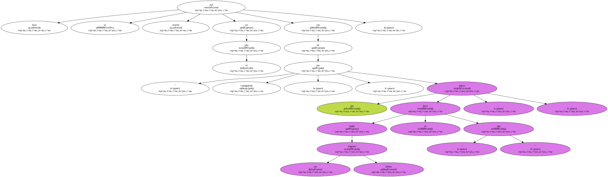
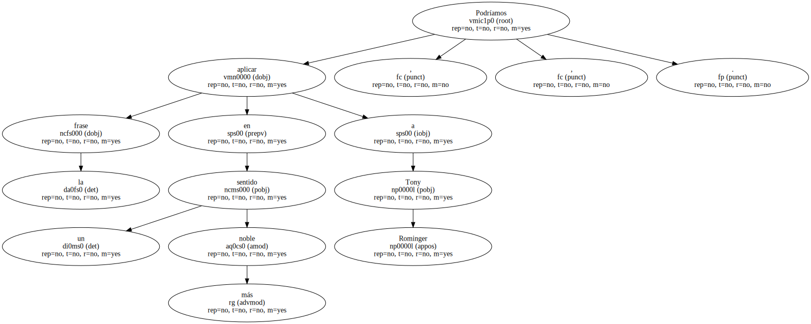
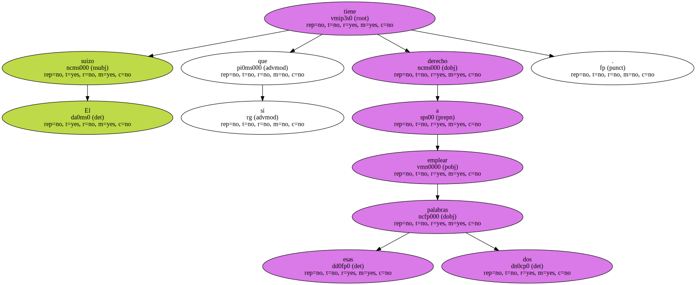

Todavía puede romper algún plato , ya que no la vajilla completa.
Su actuación ayer recordó viejos esplendores.

Sólo él y Zarrabeitia atacaron de verdad , en el sentido de conmover la carrera , haciendo del Banesto el gran revoltoso ( y beneficiado ) del día.
El empuje de ambos tuvo en Zülle la misma referencia.

" Zarra " desenterró el hacha de guerra para distanciar al suizo de la ONCE y consolidar su segundo puesto.
Delgado , para aproximarse a él y tratar de acceder al tercero.
Sería muy bonito que dos corredores separados por diez años de diferencia de edad se unieran , aparte de en el mismo equipo , en el mismo podio.
Zülle , no obstante , sigue siendo el máximo candidato para ocupar , al menos , ese tercer lugar.
Queda la última contrarreloj y es más fácil que las piernas del segoviano se muestren , en la última semana , más frágiles que la moral del suizo.
Ayer se oyó mucho en el país eso de " por consiguiente " , que quiere decir , según sus orígenes latinos , " yo sigo ".
Podríamos aplicar la frase , en un sentido más noble , a Tony Rominger.
El suizo sí que tiene derecho a emplear esas dos palabras.
